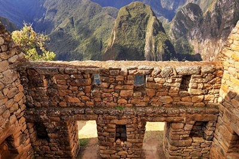
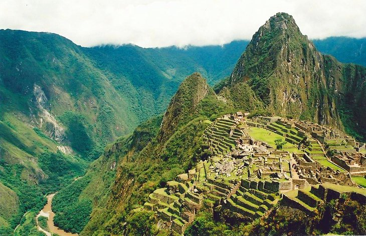
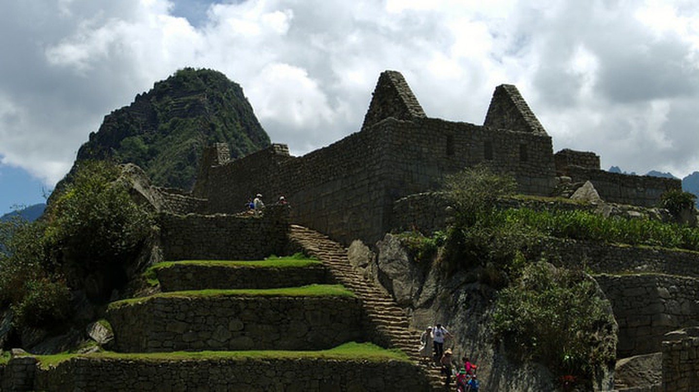
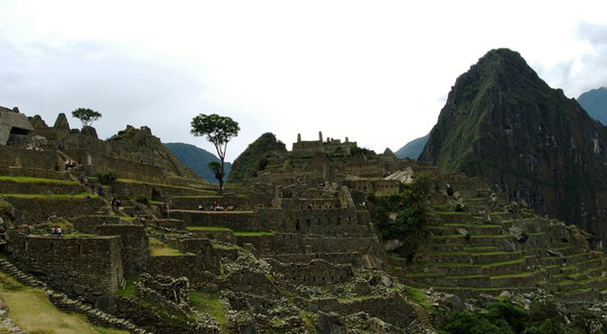

Some of The Reasons Why You Should Visit Machu Picchu
The architecture
- The engineering genius and precision of the Incas is simply stunning, especially on this little bit of
land in the clouds. The Incas mastered the technique called ashlar where blocks of stone are cut to fit
together tightly without mortar. The stones are so tightly fit you can’t even fit a blade between them.
It is also a testament to the structural integrity of the site that it still stands, through earthquakes,
constant torrential rain and, now, heavy tourism.

The sights
- At a dizzying 2,430 meters above sea-level, the view form Machu Picchu on a clear day is breath taking.
The famous ruins are surrounded by towering peaks (apus, which means “sacred peaks” in Quechua) and have
views of the surrounding valley.

The history
- From the Incas to Hiram Bingham’s “discovery” and all the controversy that it brought, Machu Picchu’s
history is long and layered. You’ll spend days – really you should spend longer – learning about the
long history of the Incas and Machu Picchu.

The culture
- Cusco and the areas that surround Machu Picchu are rich in culture interest. It is a combination of
Andean traditions and Peruvian culture, with people speaking both Quechua and Spanish in the area.
Everything from the cloths to the language is unlike anything else in the world.

To read more, just visit:
"https://theculturetrip.com/south-america/peru/articles/11-reasons-why-you-must-visit-machu-picchu-at-least-once-in-a-lifetime/"